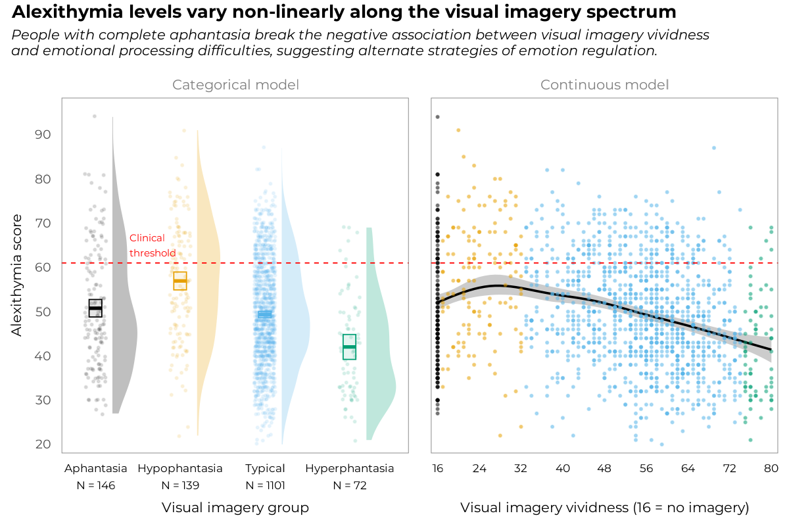

aphantasiaEmotions is a data analysis project wrapped in an R package for reproducibility1. It contains the code and data to reproduce the analyses presented in the article “Aphantasics Process Emotions Differently: Evidence of a Non-linear Relationship Between Visual Imagery and Emotional Processing Abilities”. This repository is archived with a permanent DOI on the Open Science Framework here.
Below is the graphical abstract of this study, which summarises the main finding that came out of the analyses.

What exactly is in this R package?
The package includes the raw data used in the analyses in the form of a built-in dataset called all_data to make it easily accessible and reusable. This table is the combination of two original, previously unpublished datasets, and three datasets from previous studies, namely Ale & Burns (2024), Monzel et al. (2024) and Kvamme et al. (2025). The package comes with a set of functions for manipulating the data and reliably reproducing the analyses presented in the article. The data and the functions are documented in detail in the package website, which also contains a vignette with an extended analysis report containing all analysis outputs, including those not reported in the article for brevity.
The source code of this vignette is available in the vignettes/ folder of the package repository.
Installation
You can install the development version of aphantasiaEmotions from GitHub with:
# install.packages("pak")
pak::pak("m-delem/aphantasiaEmotions")Alternatively, you can clone the repository, launch the R project in RStudio by opening the aphantasiaEmotions.Rproj file and run the following command:
devtools::load_all()
#> ℹ Loading aphantasiaEmotions
#> Welcome to aphantasiaEmotions.… Which will load the package and make all its functions and data available in your R session.
Citation
This GitHub repository is archived in the OSF project, which allowed to assign a permanent DOI to the code and data. Thus, if you use this code or data in your research, please cite the OSF project with the following:
Delem, M., Mas, M., Luminet, O., Ruby, P., & Plancher, G. (2025). “Supplementary materials for ‘Aphantasics Process Emotions Differently’.” https://doi.org/10.17605/OSF.IO/B837S.